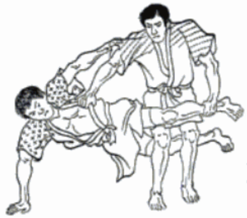

Technique of the Month
Kani Basami: Flying Scissors
This is prohibited Waza.
Summary
The Kani-basami (Scissors throw) consists of scissoring the opponent's upper body between your legs and toppling him in the backward direction.
Details
Tori breaks uke's balance towards his rear from the left side of uke's body, and while dropping down onto one side, he puts the right leg on uke's lower abdomen and the left leg on the back of uke's knees and reaps his lower body in a scissor-like action, but so that he is thrown backwards.
Positioned beside Uke (Player receiving opponent's attack), Tori (Player executing technique) grasps the back of Uke (Player receiving opponent's attack) collar with his Tsurite (Lifting hand). While supporting himself by placing his Hiki-te (Tsurite [Lifting hand]) against the floor, Tori (Player executing technique) raises both legs and scissors Uke (Player receiving opponent's attack) upper body with them. In this "scissors" posture, one of Tori (Player executing technique) legs is positioned behind Uke (Player receiving opponent's attack) knees, and the other leg is at Uke (Player receiving opponent's attack) abdominal area. Tori (Player executing technique) then twists his waist to rotate both is legs in the backward direction, and topples Uke (Player receiving opponent's attack) in that direction. Tori (Player executing technique) performs this leg reap while pulling Uke (Player receiving opponent's attack) backward with his Tsurite (Lifting hand). Due to the force of the fall which this Waza produces, and due to the high risk of strong back-of-the-head impacts against the floor which could even result in death, this is a prohibited Waza. The four Waza which are currently prohibited by the international rules are the Kani-basami (Scissors throw), Ashi-garami (Entangled leg lock), Do-jime (Body scissors), and the Kawazu-gake (One-leg entanglement drop).
News Feed
Story of the Month
Two San Antonio Judo Athletes Chase Dreams to World Championships in Tokyo
Judoka of the Month
Diane Tamai Jackson

Affiliation
USJF
Yudanshakai
Shufu
Club
Hui-o Judo Club
City, State
Beltsville, Maryland
Age
50 years
Stats
Kata World Championships 2018
Kata Grand Slam and World Kata Championship Olbia 2017
World Kata Championships
Self Bio
Diane Tamai Jackson, godan, began judo at age seven. Her first sensei was her father, Ken Tamai, at the Hui-o judo club in Maryland, and she grew up competing in shiai. As an adult, she has been a member of over ten US teams in international judo kata competition, including the Kodokan International Kata Invitational, Cuban Olympics, Pan American Championships, and four World Judo Kata Championships. She has also won multiple medals in kata at the open World Masters Judo Championships. Diane was most recently the 2016 Ju-no-kata Pan-American gold medalist in 2015 & 2016 kata grand champion in the mixed division at the Senior National Championships. Diane is an active volunteer for judo, as a National-level referee, National-level kata judge, member of the Shufu region Board of Examiners, Chair of the Kata Committee for the Shufu region, and an assistant instructor at Hui-o judo club in Beltsville, Maryland.
“I loved shiai growing up and I still love shiai. I learned confidence, compassion and perseverance, in judo and in life. But my understanding and appreciation for judo expands as I study the katas. As a young student, I never dreamed of competing at the Kodokan for the USA, but I was fortunate to have that opportunity in 2007 competing in the Kodokan International Kata Invitational. Judo is truly a life-long journey.“